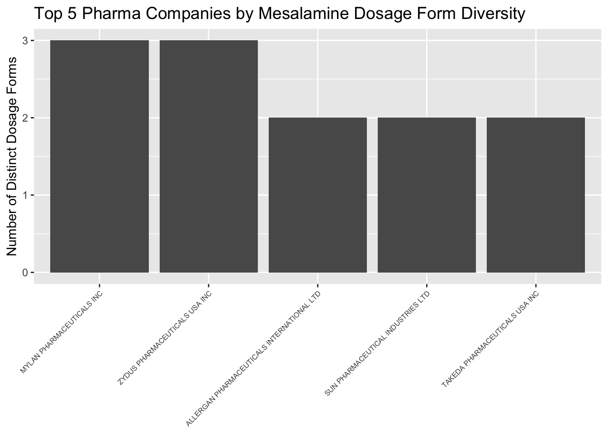

{kind=link}
library(bigrquery)
library(tidyverse)How to implement BigQuery dataset into r
What is BigQuery
BigQuery is Google’s serverless data warehouse, with built-in features like machine learning and business intelligence to manage and analyze big enterprise data. It can be accessed as a limited, free tier service or subscribed to. It is very intuitive to use.
Selecting a public database
There are multiple databases publicly available on Google Cloud within the free tier, my interest was on the ebi_chembl dataset. This is a manually curated database of small molecules used in drug discovery, including information about existing patented drugs. The Schema and the Documentation of the database are available online.
Writing SQL script to query the database
A SQL script was written to filter the public database for the available mesalamine products. SQL statements, like SELECT, JOIN and WHERE were used to join multiple databases on molecule registration number and product id foreign keys, after consulting the schema.
The results table and SQL files were saved into the BigQuery Project and Database.
Load the data from BigQuery to r
First the necessary libraries are (downloaded if necessary and) imported into RStudio.
Next, GCP BigQuery needs to authenticate this local RStudio project. For this, run the command bq_auth and log into the Google Account used for BigQuery and allow access (note: output is not shown)
bq_auth()The id of the project from GCP can be found on the landing page of the website. Also add the SQL query saved to the same project.
project_id = 'learn-bigquery040625'my_sql_query <- "
SELECT m.chembl_id, m.pref_name, d.mechanism_of_action, p.trade_name, p.route, p.dosage_form, p.applicant_full_name
FROM `patents-public-data.ebi_chembl.molecule_dictionary` m
JOIN `patents-public-data.ebi_chembl.drug_mechanism` d
ON m.molregno = d.molregno
JOIN `patents-public-data.ebi_chembl.formulations` f
ON d.molregno = f.molregno
JOIN `patents-public-data.ebi_chembl.products` p
ON f.product_id = p.product_id
WHERE m.chembl_id = 'CHEMBL704'
"This next code chunk will download the result and will save it as a dataframe.
results <-
bq_project_query(project_id, my_sql_query)
mesalamine_products <-
bq_table_download(results)Visualization
Now let’s use tidyverse and look at the number of different dosage forms at the companies (top 5):
dosage_counts <- mesalamine_products %>%
group_by(applicant_full_name) %>%
summarize(num_of_dosage_form = n_distinct(dosage_form)) %>%
arrange(desc(num_of_dosage_form)) %>%
head(5)Within r, it takes only a few lines of code to visualize the result.
ggplot(dosage_counts, aes(x = reorder(applicant_full_name, -num_of_dosage_form), y = num_of_dosage_form)) +
geom_col() +
labs(
title = "Top 5 Pharma Companies by Mesalamine Dosage Form Diversity",
x = NULL,
y = "Number of Distinct Dosage Forms"
) +
theme(
axis.text.x = element_text(angle = 45, hjust = 1, size = 6),
plot.title = element_text(size = 14)
)
Summary
According to the 2016 Chembl Database on Google Cloud, Mylan and Zydus Pharmaceuticals marketed the most mesalamin dosage forms (3 each).
Disclaimer
This project was created with guidance from a YT Webinar from the R Consortium, titled Google BigQuery: First Steps in R (link) presented by Joy Payton.
04 June 2025, Huntingdon UK